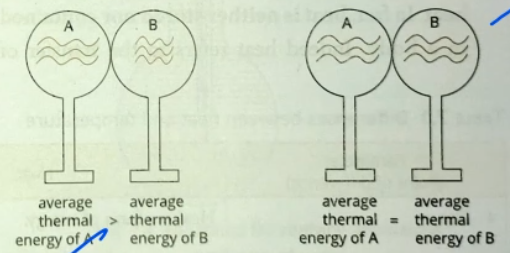
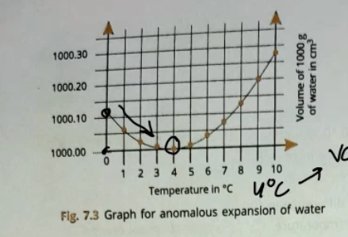
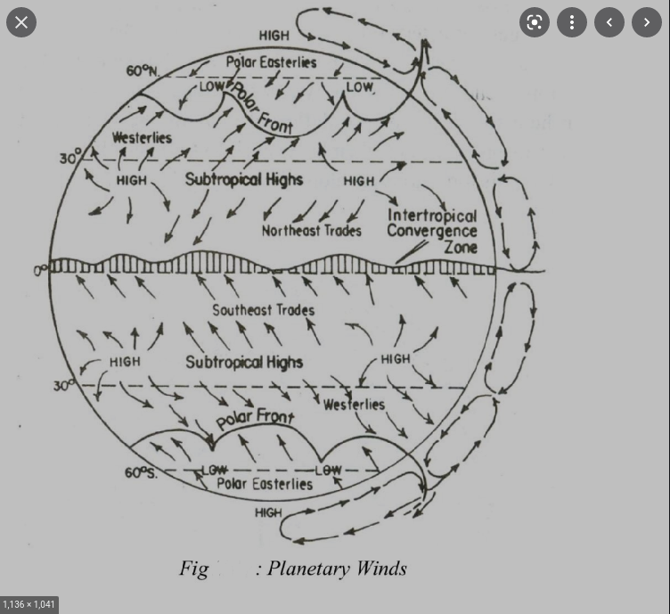

Table of Contents
1 Syllabus
1.1 Physics
1.1.1 Motion in one dimension
1.1.2 Laws of motion
1.1.3 Gravitation
1.1.4 Heat
- Definition of temperature
- Degree of hottness or coldness of an object.
- Average total kinetic energy in an object
- It determines the direction of flow of heat
Unit - K, C 0° C = 273k
- Definition of Heat
- Sum total energy of all the molecules in a substance
AKA:Thermal Energy, Heat EnergyUnit - Joule, Watt-Hour, cal 1 cal = 4.186 Joule
- Thermal equilibrium

- The condition when objects in contact with each other do not further exchange head it called Thermal Equilibrium
- Difference between heat and temperature
No. Heat Temperature 1. Heat is a form of energy Temperature is a degree of hotness or colness 2. Heat is the cause of temperature Temperature is an effect of heat 3. - Temperature determines the direction of heat. 4. Unit - joule Unit - kelvin - Anamolous Expansion of Water

- The expansion of water when it is cooled below 4° C
The Density of water is minimum at the temperature of 4° C at 1 gm/cc. Which is the standard density of water given in most places.
- Pratical Applications
- Survival of Aquatic Creatures
In Northern climates lakes would fully freeze over, rather than just the surface because the surface would be the last to freeze anyway, but because at 4C the water sinks. Meaning at 4C The lake would be uniformly heated.
- Water Pipes burst
The expansion of water causes the pipes to burst
- Fruits Burst
The water present in each of the cells expand causing great pressure
- Frost bite
Similarly, for humans
- Survival of Aquatic Creatures
- TODO Q1 Q7
1.1.5 Energy
1.1.6 Reflection of light
- The nature of light
- Light is a form of energy.
- Wave nature, particular nature, transverse
wave ( transverse - perpendicular ), ( logngitudinal is along the length ).
- Reflection of light
- /Reflection is the phenomenon in which rays of light on striking a
surface are sent back into the same medium/
- Definitions of Some terms
- Points
- Point of incidence Point where the ray strikes the mirror
- Point of reflection Point from which the ray emerges
- Rays
- Incident ray The ray that strickes the mirror's reflecting surface
- Reflected ray The ray that emerges from the mirror
- Normal A line drawn perpendicular to the mirror at the point of incidence
- Angles
- Angle of incidence Angle between the incident ray and normal
- Angle of reflection Angle between the reflected ray and normal
- Glance angle of incidence Angle between the incident ray and mirror
- Glance angle of reflection Angle between the reflected ray and mirror
- Points
- Laws of Reflection
- The incident ray, the normal, and the reflected ray are all in the same plance
- The angle of incidence is equal to the angle if reflection
- Types of Images
- Differences
Parameter Real Virtual Formation It is fromed when two rays inersect at a point in front of the mirror When two or more rays appear to meet behind a screen Screen It can be obtained on a screen It can not Nature It is always inverted It is alwyas errect - Pair of mirros formula
- Parallel mirrors
- Uses of plane mirrors
1.1.7 Sound
1.1.9 Magnetism
- Natural Magnet
- Magnet
- Magnetic Poles
- Magnetic and Non-Magnetic substances
Substances that are attracted to magnets are called magnetic
- Magnetic Compass
- It is an instrument consisting of a suspended magnet which can be used for navigation
- Properties of Magnets
- Induced Magnetism
- Earth's Magnetic Field
- Uniform and Non Uniform Magnetic Fields
Uniform - Center of bar magnet, lines are parallel Non Uniform - Everything else
- MLOF
- Null Points
Points where the value of the magnetic field is 0.
- Electro-Magnet
- A manget whose magnetic field is induced by electric current
- Uses of Magnets
- Electric Bell
It works on the prinnciple of electro magnetism.
- On pressing the key the current starts flowing in the circuit of the
electric bell.
- When the current passes through the electromegnet it
attracts the hammer towards itself which strikes the gong
- When the hammer touches the gong the circuit breaks down. Current
stops flowing, due to which the electromagent loses its electromgentism and returns to its orignial positionn
- When the hammer comes back the setup is returned to its original position
1.2 English
1.2.1 Merchant of Venice
- TODO Worksheets
- Act 1
- Scene 1
Whole discussion about why antonio is sad, followed by bassanio revealing to antonio what he had wanted to talk about
- Scene 2
Portia and nerissa discusss portia's suitor. First she cribs a little bit about her father's rules and then it's made clear she likes bassanio
- Cribbing
If it do was as easy as to know what were good to do, Chapels had been chruches as poor men's cottages princes' palaces. It is a good divine that follows his own instructions. I can easier teach twenty what were good to be done, that ne one of the twenty to follow mine own teaching. The brain may devise laws for blood, but a hot temper leaps o'er a cold decree: such a hare is madness of youth, to skit o'er the meshes of good cousel, the cripple
- Neapolitan Prince
From naples, Italy (map)
Greatest Achievement: Shoeing his horse
Hobby: Talking about how he can shoe his horse.
- County palatine
South Germany ( does not exist yet ), so palatinate
Future expectations: Going to live in the mountains abandoning humaity (
Heraclitus of Ephesus)Hobbies: Sulking
I had rather be married to death's head with a bone in his mouth
- Monsieur Le bon
France
Stunning prince from france, beats down both County palatine and Neaplitan…. In being a horrible husband. He has the temprement of Count plataine. And the boastfulnes of the Neapolitan prince.
If he would despise me, I should forgive him. for if he love me to maddness, I shall never requite him
- Baron Falconbridge
From, England
Languages: pas de Français, non latin, nessun italiano
- Scottish lord
- Nephew of Duke Saxony
- Prince Morroco
- Cribbing
- Scene 3
- Scene 1
- Act 2
1.3 Biology
1.3.1 Red Cross
- Origin
Originated in Geneva, Switzerland The ICRC operates in over a 100 coutries, providing relief to patients all over the world.
Jean-Henri Dunant, 1859 went to meet the french emperor napoleon the III, to talk about difficulties in bussiness in algeria, he arrived in the small town of Solferino. Dunant was horrified by the death he saw at the battle of solferino, every single day 40,00 soldiers died and for that dunant devoted himself to their aid .Before which there weren't many aid Gustave Moynier in 1863 received denuna't book and but it for discussion at theosciety for public welfare in geneva.
Back at home he write a book called A memory of solferino
Since this was the 19th centuary, the international committee was attencded by the autrian empire baden, bavaria, france, hanover, hesse, italy, netherlands, prussia, russia, saxony, spain, UK, seden, norway
- WW1
The red cross beign an international organisation does not have much power within countries, it has to work with the red cross organisations of various countries.
It is stunning to imagine that they were able to muster any effort at all considering the leading medical science had barely even accepted thories like germ theory, they were still in the age before anasthesia. Practices like amputation was the de-facto response to any disease. Aroma theory was still prevailent. The sanitation revolution after the cholera epidemic had only recently started.
Regardless, They had to face one if the greatest disasters in world history WWI
1.4 Hindi
1.5 Geography
1.5.1 Atmosphere
- Winds Static winds

- Periodic winds
Only during a certain part of the year, or season, or day.
- Local Winds
Localized only effect a small area
- Variable Winds
They are caused occasionally due to the movement of pressure systems
- Low pressure eq
Makes Sense its pretty hot so low pressure. This forms clouds when the water rises and makes cloud, this also explains daily rainfall
- High pressure Sub tropical
Doesn't really make sense its still pretty hot. The air which has risen from the equator, will sink when it reaches slightly higher latitudes. This also means that there won't be any clouds because all the water leaves as the air cools, it evaporatoes off. This means that the sky is clear. No cloud cover means extreme temperatures.
Off hand: "This is why there are desserts there"
- Low Pressure Sub Polar
- High Pressure Polar
Makes sense its prety cold so high pressure
- Hadley cell Between the eq and subtropical belts
- Ferrel cell Between the Sub Polar and and Sub tropical Belts
- Polar cell Between the polar and sub polar belts